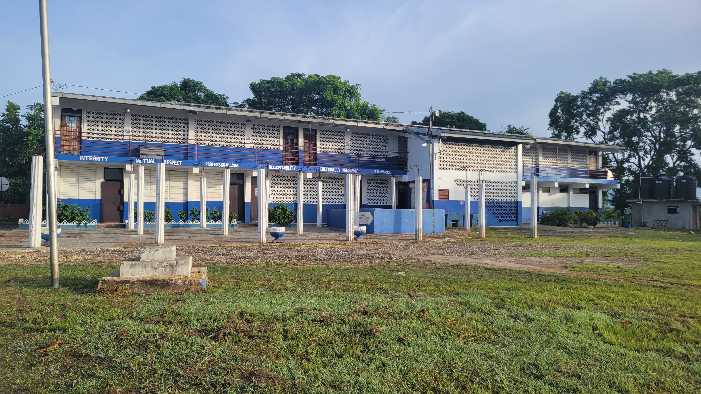

Join Wakefield Primary Alumni Association - St. Catherine Ltd.
Connect with fellow alumni and support the growth of Wakefield Primary. Join us for meetings, volunteer opportunities, and events to engage and uplift our community.

Core Packages
Student Counseling Services
We help students find guidance and support for academic and personal challenges.
Extracurricular Programs
We offer a range of after school activities to enhance student learning and growth.
Parent-Teacher Meetings
We organize regular meetings to keep parents informed of their children's progress.
About Us
The Wakefield Primary Alumni Association (W.P.A.A) St. Catherine helps our alma marter thrive. We bring together parents, teachers, and local leaders to support the education of our students

Testimonials
Location
Wakefield District, Buxton Town P.A., St. Catherine, Jamaica
Join Our Alumni Network
Connect with fellow Wakefield Primary graduates in St. Catherine.